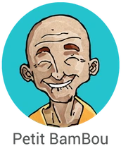

Arthur & Adrien présentent
Chaque événement mérite son film.
Vidéastes événementiels · Soirées · Festivals · Marques · Sport
Scrollez pour lancer le filmScène 01 — L’émotion
Une soirée.
Un festival.
Un match.
Un lancement.
Ce qu’on en retient,
ce n’est pas ce qu’on a vu.
C’est ce qu’on a ressenti.Notre métier : capter ça, avant que ça disparaisse.
Scène 02 — Le casting

Réalisateur n°1 · cut / 0,2 s
Arthur
Dynamique & immersif
Caméra au cœur de l’action, plans rythmés, montage nerveux. Pour faire vibrer une soirée et accrocher dès la première seconde.

Réalisateur n°2 · fondu / 2,5 s
Adrien
Posé & cinématographique
Plans construits, rythme maîtrisé, montage qui respire. Pour sublimer un lieu et raconter un événement avec élégance.
Scène 03 — Les images
Quelques prises.
Scène 04 — La méthode
De votre idée au film publié.
- 01 / 04
Le brief.
Un appel, un message. On comprend votre événement, votre public, vos réseaux.
- 02 / 04
Le tournage.
On se fond dans l’action, au plus près de la foule. Adaptables, quoi qu’il arrive.
- 03 / 04
Le montage.
Dynamique avec Arthur, cinéma avec Adrien — ou les deux. Même exigence.
- 04 / 04
La livraison.
Des vidéos pensées pour les réseaux, prêtes à publier. Et à faire parler.
Scène 05 — Générique de fin
Un film de Arthur & Adrien
- Réalisation
- Arthur dynamique
Adrien cinéma - Au programme
- Soirées & clubs
Festivals
Marques & entreprises
Sport & clubs
Artistes & DJ
Avec la confiance de



- nilsforeal DJ
- Pourquoi nous
- Un regard jeune & actuel
Les codes club & festival
Deux styles complémentaires
Du contenu taillé pour les réseaux
Une adaptabilité totale sur le terrain - Tourné à
- Lille · Roubaix
Lambersart · La Plagne - Formats
- Réels 9:16 · Aftermovies
Teasers · Vidéos de marque - En activité depuis
- 2020
- Délai de réponse
- Moins de 24 h
Aucun trépied n’a été maltraité pendant le tournage.
Fin.… ou presque.
Scène post-générique
Le prochain film,
c’est le vôtre.
Racontez-nous votre événement. On vous répond sous 24 h.